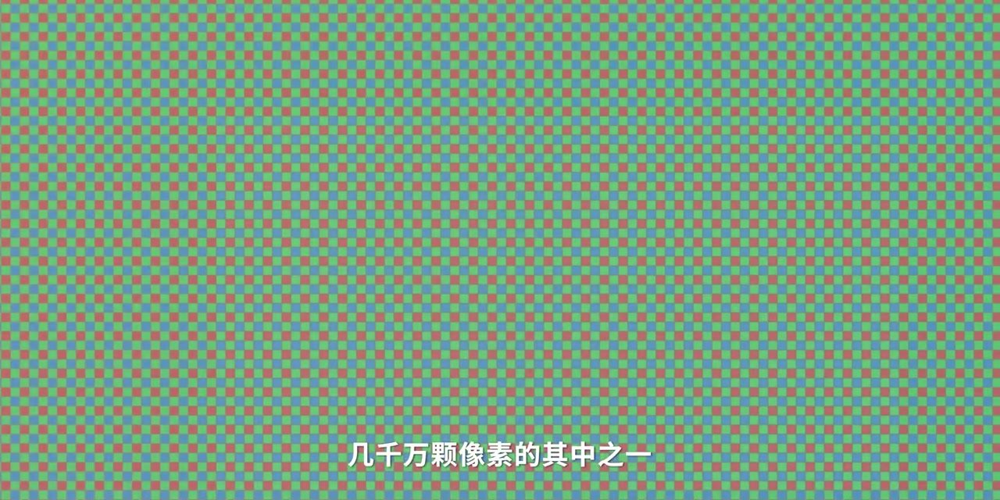
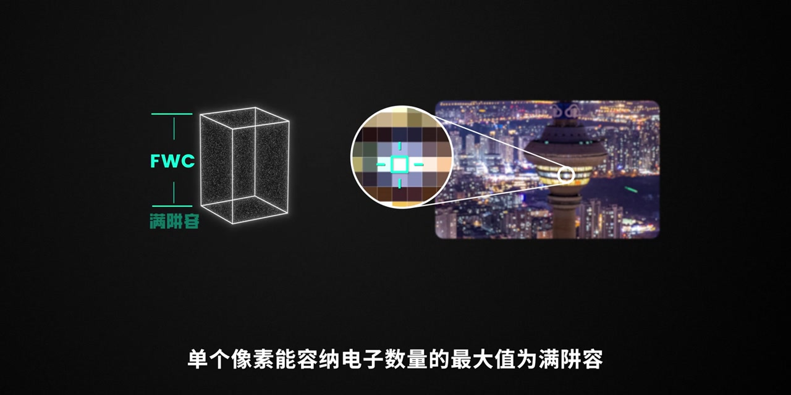
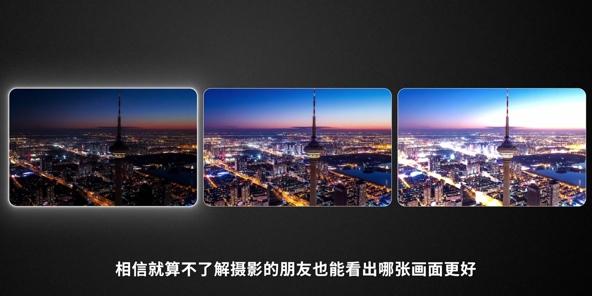
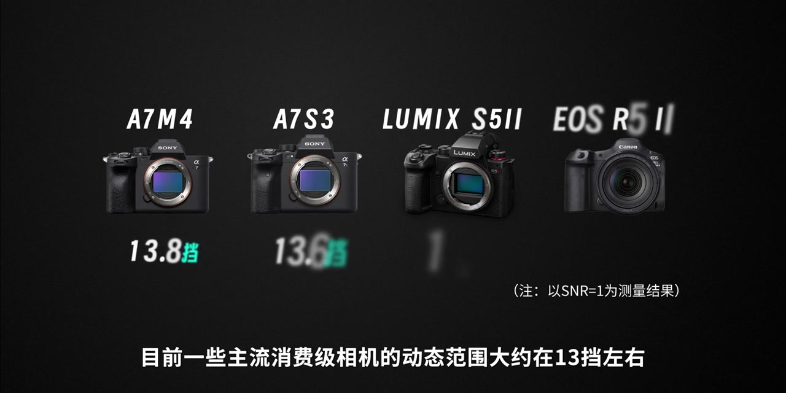
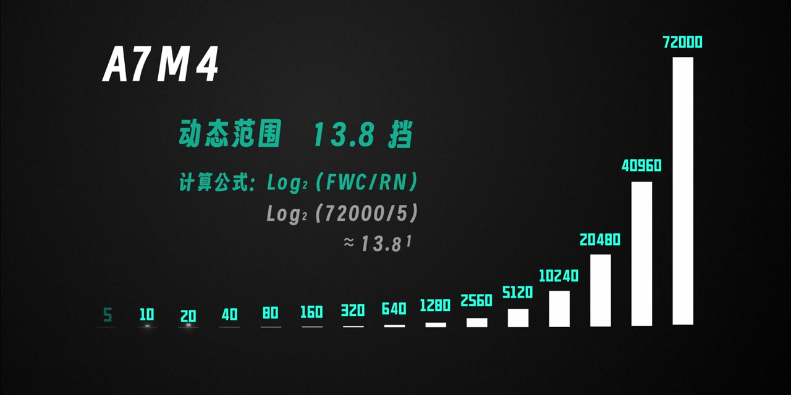
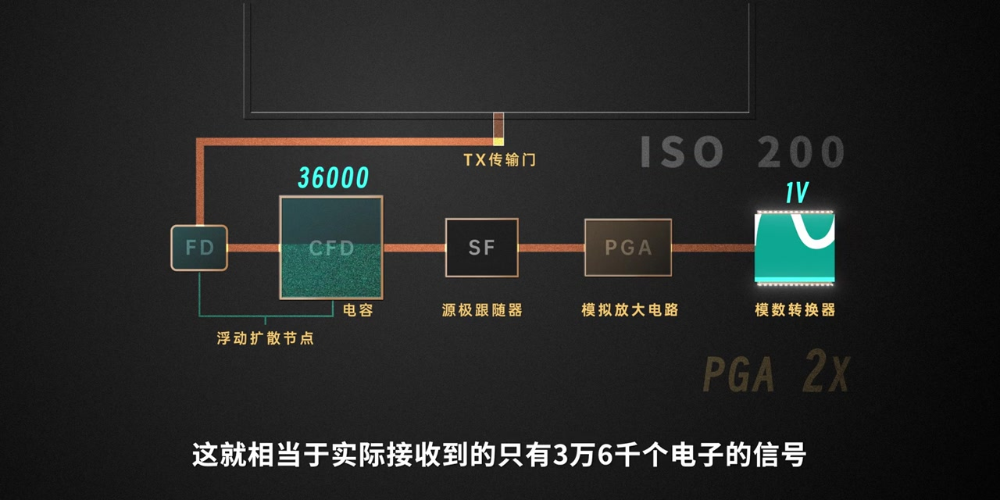

开场：把镜头怼进传感器，看见一颗像素
视频一上来就是放大后的传感器马赛克：红绿蓝格子铺满画面。旁白说，这是相机传感器里几千万颗像素中的其中之一——它的最大作用就是感光。像素收到的光子越多，照片上对应的那个点就越亮。
画面字幕：「几千万颗像素的其中之一」
说明：Whisper 常把「颗像素」识成「核像素」、「满阱容」识成「满景容」、「过曝」识成「过暴」、「读出噪声」识成「独出噪声」、「CMOS」识成「SIMOS」、「进光量」识成「金光量」、「A7M4」识成「ACM4」、「模数转换器」识成「魔术转换器」、「1伏」识成「异服」、「16-17档」识成「167档」。下文叙述以可见字幕与动画为准；页面末尾仍完整保留全部 Whisper 分段。

上限：满阱容装不下，就是过曝
动画把单个像素画成一个立体「阱」，里面堆满代表电子的白点，旁边标着 FWC / 满阱容。旁白解释：单个像素能容纳电子数量的最大值叫满阱容；超出之后的部分无法记录——也就是画面过曝。右侧还配了夜景城市照片，用绿框标出被放大观察的那一颗像素。
画面字幕：「单个像素能容纳电子数量的最大值为满阱容」

下限：光子很少时，底噪成了最小值
反过来，像素收到的光子越少，画面上那一点就越暗。旁白补充：没有信号输入时，CMOS 本身也存在噪声，也就是底噪，可以近似为读出噪声——此时就是能分辨的最小值。画面里「阱」只剩稀稀拉拉几个点，和下方满阱的对比很直观。
旁白要点：底噪 ≈ 读出噪声，构成动态范围的下限。
定义：满阱容 ÷ 读出噪声 = 动态范围
旁白给出核心定义：最大值满阱容与最小值读出噪声的比值，就是动态范围。简单来说，就是相机能记录下最亮和最暗的一个区间。字幕几乎原样打出了这句话，动画也把上下两个阱留在同一构图里，方便理解「比值」。
画面字幕：「这个最大值满阱容与最小值读出噪声的比值」
直观对比：高低动态范围差在哪
视频切到三张夜景城市并排。旁白说：对比一下这几张照片，就算不了解摄影的朋友，也能看出哪张画面更好——动态范围高低对画面影响非常大。接着给出量级：目前一些主流消费级相机动态范围大约在 13 档左右，而有些电影机可以做到 16–17 档。画面上还列出 A7M4、A7S3、LUMIX S5II、EOS R5 II 等机型约 13.6–14.2 档的示意数据。
画面字幕：「相信就算不了解摄影的朋友也能看出哪张画面更好」


「档」是什么：两倍进光量为一档
旁白解释：这里的「档」指的是曝光值（EV），两倍为一档。例如快门 1/100 秒与 1/200 秒，或光圈 F1.4 与 F2，都是相差一档的进光量。通过不同参数组合可以做到曝光值相同。需要注意：ISO 能改变图像亮度，但改变不了进光量——真正决定进光量的只有光圈和快门。
关键区分：ISO 调亮度 ≠ 改变到达传感器的光子数量。
用 A7M4 算一遍：约 13.8 档
以 A7M4 为例：最大满阱容约为 72000 个电子，基准 ISO 下读出噪声约为 5 个电子。要分辨出有效信号，就需要高于这个最小值；往上一档是 10 个电子，两档是 20 个……类推到最大 72000，差不多就是 13.8 档。画面给出公式 Log₂(FWC/RN) = Log₂(72000/5) ≈ 13.81，底部还有从 5 到 72000 的指数阶梯条。
画面公式：动态范围 ≈ Log₂(满阱容 / 读出噪声)

转折：提高 ISO，动态范围会被压缩
旁白说：动态范围除了由硬件决定，还会受另一个参数影响——ISO。提高 ISO，动态范围会随之降低。原因在信号链路：模数转换器（ADC）能接收的最大电压信号有上限。基准 ISO100 时 PGA 不放大，满阱 72000 个电子可转换成约 1 伏，正好贴着 ADC 上限；ISO200 时 PGA 模拟放大两倍，电压被推到 2 伏，但 ADC 上限仍是 1 伏，超出部分无法记录——相当于实际只用了约 36000 个电子的信号。
从 ADC 层面看：ISO100 时接收范围约 70 微伏至 1 伏；ISO200 时下限抬到约 140 微伏，上限仍是 1 伏——上限不变、下限提高，整体动态范围被压缩。ISO 越高，PGA 放大倍率越高，ADC 能接收的电压区间越窄，动态范围自然下降。
画面字幕：「这就相当于实际接收到的只有3万6千个电子的信号」

视频收在一句实操提醒上：想保留更大动态范围，尽量靠近基准 ISO 拍摄；高 ISO 换来的是亮度，代价是可用亮度区间变窄。